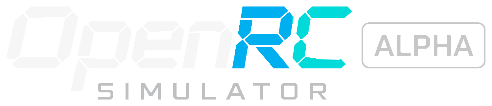
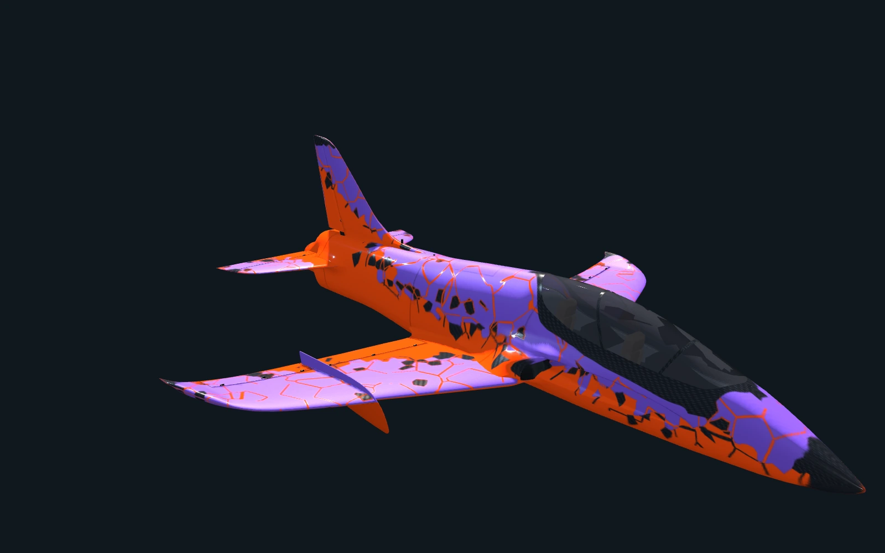
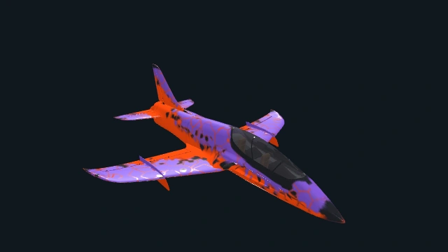
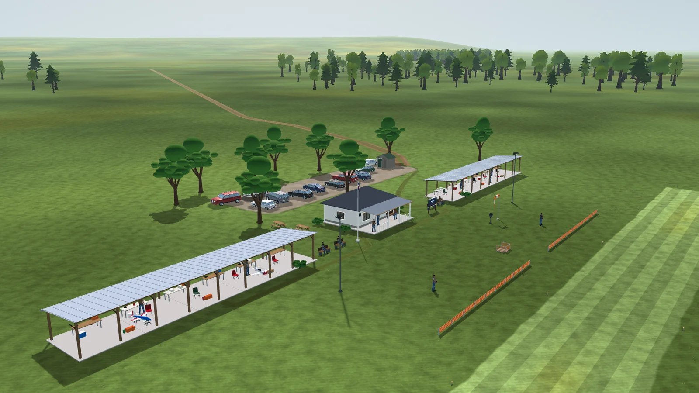

Собственный решатель полёта.
Шесть степеней свободы, расчёт в float64. Локальные аэродинамические нагрузки, динамика сервоприводов и силовые установки для конкретных самолётов.


Бесплатный симулятор радиоуправляемых полётов с открытым исходным кодом.
Для Windows, Linux и macOS. Ранняя альфа-версия.

OpenAI поддерживает проект, оплачивая подписку ChatGPT Pro. Благодаря этой поддержке мы можем больше исследовать, создавать и делиться OpenRC с сообществом авиамоделистов.
Спасибо, OpenAI ↗Идеи для изучения.
Код, которым можно делиться.
Реальные продукты.
Новые возможности в симуляторе.
01 / АНГАР
Пять самолётов и экспериментальный вертолёт.
Выберите модель и рассмотрите её со всех сторон.

ДРУГОЙ ТЕМП
Турбинная силовая установка и лаконичный силуэт. Эта экспериментальная конфигурация начинает полёт в воздухе с убранными закрылками и шасси.
Перетаскивайте модель для обзора · Меняйте угол ползунком.
ТАКЖЕ ДЛЯ STIK: MAX-61FX · MAX-55AX · FS-64V. Три экспериментальные двух- и четырёхтактные калильные установки.
КАТАЛОГ ТЕКУЩЕЙ ВЕРСИИ. Модели экспериментальные и всё ещё нуждаются в измерениях и оценке пилотов. Загрузка v0.1.8 — отдельный снимок версии, который может отличаться от текущего исходного кода.

VANTAGE JET / БЛИЖЕ К ДЕТАЛЯМ
Фонарь кабины, крыло и хвостовое оперение. Три ракурса модели для изучения в 3D.
02 / ВАШ СЛЕДУЮЩИЙ ВЗЛЁТ
v0.1.8 / ДОСТУПНОСкачайте ZIP-архив, распакуйте и запустите.
Устанавливать Godot не нужно.
В v0.1.8 добавлены экспериментальный F4U Corsair, настройка детализации сцены, деревья на поле в 3D и дальний лес, а также необязательный графический профиль «Высокий». Поведение в полёте ещё нуждается в проверке в реальном мире.
В текущей версии исходного кода интерфейс симулятора доступен на девяти языках: English · Español · 简体中文 · Português (Brasil) · Deutsch · Français · Italiano · Русский · 日本語. Сборка v0.1.8, доступная для скачивания, поддерживает английский и испанский.
Стабильный программный релиз v0.1.8. ZIP-архивы не содержат установщика и не подписаны; приложение для macOS подписано специальной одноразовой подписью, но не прошло нотариальное заверение.
Модели самолётов и наземных машин остаются экспериментальными и требуют независимых измерений и оценки пилотов.

03 / УВИДИМСЯ НА ПОЛЕ
Травяная полоса. Деревья на горизонте.
Летайте с места пилота или следите за самолётом с помощью лётных камер.
04 / ПОД КАПОТОМ
Мы шаг за шагом создаём симулятор радиоуправляемых полётов. С открытым кодом, повторяемыми полётами и вопросами, над которыми ещё работаем.
Изучить исходный кодРЕАЛИЗОВАНО В ТЕКУЩЕЙ ВЕРСИИ ИСХОДНОГО КОДА
Шесть степеней свободы, расчёт в float64. Локальные аэродинамические нагрузки, динамика сервоприводов и силовые установки для конкретных самолётов.
USB-передатчик, геймпад или клавиатура. Сохранение калибровки, арминг газа и failsafe при отключении.
Лётные записи, точное воспроизведение и экспорт CSV помогают изучать поведение самолёта на тех же записанных управляющих сигналах.
УСТРОЙСТВО СИМУЛЯЦИИ
Изучите системы, уже доступные в исходном коде. Для каждой области приведены документация и текущие ограничения.
Собственный шестистепенной решатель с интегрированием RK4 на частоте 240 Гц и состоянием float64. Локальные аэродинамические нагрузки на крыло и хвост, балансировка, сваливание, штопор и динамика рулевых поверхностей.
Двух- и четырёхтактные калильные двигатели, бензиновые двигатели, электрические силовые установки и турбина с раскруткой. Крутящий момент, гироскопические эффекты, P-фактор и поток от винта зависят от модулей каждого самолёта.
Независимое вращение каждого колеса, подвеска, рулевое управление, сопротивление качению и скольжение шин. Укатанная трава и неровный грунт имеют разные профили поверхности.
Однородный ветер, повторяющиеся порывы и турбулентность с заданным начальным числом. Для физической атмосферы настраиваются высота, температура, давление QNH и влажность.
USB-передатчик, геймпад и клавиатура с калибровкой, армингом и аварийным failsafe. Для клавиатуры и геймпада настраиваются рейты и экспонента отдельно для каждого самолёта; передатчики сохраняют собственные настройки.
Трава, деревья, озеро, клубные здания, машины, люди и птицы. Пространственный звук двигателя, винта, ветра, листвы и животных с эффектом Доплера, зависящим от движения.
Контракт openrc-aircraft v2 требует указать единицы измерения, тип доказательств и источник. Некорректные конфигурации не допускаются к полёту. Геометрия и физические данные заново генерируются из исходников.
05 / МИР OPENRC
Модели, ландшафты, звуки и приборы. Оригинальные и свободно доступные ресурсы с указанием источников и лицензий.

Клубный дом, боксы, припаркованные самолёты и машины, люди, деревья и озеро. Растительность и материалы взяты из бесплатных источников; авторство сохранено.
Материалы и авторство ↗
В текущей версии — две экспериментальные радиоуправляемые машины: гараж, трасса, подвеска и отдельная физика. Здесь показан Bisonte; в Monster Car 2 эта активность дополнена нитродвигателем.
Изучить режим радиоуправляемых машин ↗06 / ПАРТНЁРЫ ПРОЕКТА
Спасибо производителям, разрешившим показывать модели своей продукции.
Savox разрешает показывать свою продукцию. Спасибо за доступ к каталогу для симуляции и контакт с инженером.
Планируется выбрать сервоприводы из каталога.
Сайт производителя ↗SonicModell разрешает показывать внешний вид, названия и фирменную символику моделей, охваченных нашим запросом, в том числе моделей Skyhunter.
Разрешение ограничено согласованным использованием. Интеграция ещё не выполнена.
Сайт производителя ↗Hitec разрешает показывать сервоприводы, опубликованные на своих сайтах, с указанием источников и ссылками на официальные продукты.
Интеграция ещё не выполнена. Это разрешение не означает совместимость с радиосистемами.
Сайт производителя ↗Aloft Hobbies рассказала о проекте на своём форуме и предложила знания и отзывы.
У каждого разрешения свой объём. Оно не означает финансовое спонсорство или подтверждение физических моделей.
07 / ОТКРЫТАЯ РАЗРАБОТКА
Стабильный настольный релиз. В примечаниях точно указано, что входит в пакет.
К загрузкам ↑Экспериментальные самолёты, двигатели, наземная физика, управление, вертолёт и радиоуправляемые машины. Исходный код продолжает меняться.
Изменения проекта ↗Масса, центр тяжести, инерция, силовая установка, манёвры и оценка пилотов. Для следующего шага нужны подтверждения.
Дорожная карта и критерии приёмки ↗В ИССЛЕДОВАНИИ: гонки FPV. Дрон, на котором можно летать, и гоночный режим пока недоступны.
ПЕРЕД ПЕРВЫМ ПОЛЁТОМ
Да. OpenRC Simulator можно бесплатно скачать, а исходный код доступен по лицензии MIT. Для самолётов, ландшафтов и других материалов действуют собственные лицензии. Код можно изучить, сообщить о проблеме или внести вклад на GitHub.
Скачайте ZIP-архив для своей операционной системы, распакуйте его и запустите приложение. Устанавливать Godot не нужно. Сверьте контрольную сумму архива с SHA256SUMS из того же релиза и прочитайте инструкции для своей платформы и ограничения подписи в руководстве по первому запуску. Выберите загрузку.
Нет. Можно использовать клавиатуру или геймпад. USB-передатчик можно использовать для управления полётом, если операционная система распознаёт его как совместимый джойстик; может потребоваться настройка осей и калибровка. Совместимость со всеми передатчиками и адаптерами не гарантируется. См. руководство по управлению и калибровке.
OpenRC — настольный симулятор. На этом сайте показаны модели самолётов в повороте и необязательный просмотрщик 3D-моделей; это предварительный просмотр, а не полёт. Чтобы летать, скачайте настольное приложение.
В OpenRC собственный решатель полёта и экспериментальные модели самолётов. Программные тесты и повторяемые лётные записи помогают обнаруживать регрессии, но не подтверждают физическую точность. По-прежнему нужны независимые измерения и оценка пилотов. Ознакомьтесь с дорожной картой валидации и примечаниями к выбранному самолёту.
ОТКРЫТЫЙ ПРОЕКТ. ОБЩЕЕ ДЕЛО.
Испытание с вашим передатчиком. Реальное измерение. Улучшение кода. Каждый вклад помогает подготовить следующий полёт.
Внести вклад на GitHub ↗Поделитесь впечатлениями ↗